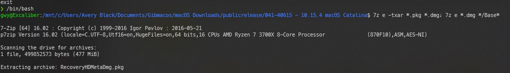

Preparing an online installer (MacOS/Windows/Linooox)
This requires a working internet connection on the target machine! If you're using wifi, that means that the wifi card must be compatible with macOS. It is possible to use hornDIS to tether with an Android phone if needed.
Using gibMacOS, you can download the recovery image directly from apple servers and put it on a USB. Once booted up, this image can download the macOS installer on to the target hard drive.
Requirements:
- 4 GB USB or greater
- Python 2.7 or greater
- For windows, make sure when installing that "add to PATH" is enabled in the installer.
- NOTE: If the .bat fails to run, you can run
python <file.py>
- NOTE: If the .bat fails to run, you can run
- For Linooox, install it through whatever package manager in your distro
- macOS already includes Python
- For windows, make sure when installing that "add to PATH" is enabled in the installer.
-
- Clone using git (
git clone https://github.com/CorpNewt/gibmacos.git) OR Click
Clone or downloadin the top right andDownload ZIP, then unzip.
- Clone using git (
7Zip
- Graphical version is probably easier in Windows
Getting the Recovery Package
- Run GibMacOS
- On Windows, run
gibMacOS.bat. If it does not recognize Python, you can also runpython gibMacOS.command - Linooox/MacOS - directly run gibMacOS.command
- On Windows, run
- Toggle Recovery-Only by entering R and pressing Enter. Make sure it says
Toggle Recovery-Only (Currently on)- This reduces the download size as we only need the recovery package (500 MB) rather than the full release (7-8 GB)
Select the release you want to download. In this case, we're downloading 1.15.4, or the latest release of macOS Catalina. It does not matter if
FULL Installis at the end or not.
You can exit out of gibMacOS once it's done downloading
Putting macOS on a USB
Windows
OpenCore allows us to put the BaseSystem.dmg on the USB with OpenCore, so we only need to format the USB to one Fat32 partition and drop it in. This does require 7Zip installed to
- Right click the Start Button on your task bar and run
Disk Management - You should see all of your partitions and disks. On the bottom half, you'll see your devices. Find your USB.
- You'll want to format the USB to have a Fat32 partition.
- If you have multiple partitions on the USB, right click each partition and delete volume for your USB (This will remove data, make sure you have backups and only remove partitions from your USB)
- Right click the unallocated space and create a new simple volume. Make sure it is FAT32 and atleast a gigabyte or two big. Name it "EFI"
- Otherwise, right click the partition on the USB and click
formatand set it to FAT32.
- If you have multiple partitions on the USB, right click each partition and delete volume for your USB (This will remove data, make sure you have backups and only remove partitions from your USB)
- In File Explorer, go to your USB and create a new folder at the root called
com.apple.recovery.boot - Again in File Explorer, find the .pkg downloaded by GibMacOS under
macOS Downloadsin the gibMacOS folder. Open the .pkg by right clicking and going under 7zip -> Open Archive

- Open RecoveryHDMeta.dmg (or similar named dmg) then open the folder contained.
You should see BaseSystem.dmg and BaseSystem.chunklist. Drag/Copy these to
com.apple.recovery.boot.
- You are ready to continue on and put OpenCore on the USB
Linooox
This will go over using gdisk, though you can use other utilties that you are comfortable using. This will create the necessary partitions on the USB.
- Run
lsblkand note your USB device - Run
sudo gdisk /dev/<your USB block>- Enter
pto print your block's partitions (and verify it's the correct USB) - Enter
oto clear the partition table and make a new GPT one - Create a partition by entering
n- Partition Number: Default (Leave blank for default)
- First Sector: Default
- Last Sector: Default
- Hex code or GUID:
0700for Microsoft basic data partition type
- Enter
wto write changes to the USB - Close by entering
q
- Enter
- Verify USB was formatted correctly with
lsblk - Run
mkfs.vfat -F 32 -n "EFI" /dev/<your partition>to format the 200MB block to FAT32 and to name it "EFI" - Mount the USB by running
mount /dev/<your partition> /mnt cdto your USB by runningcd /mntand create a folder withmkdir com.apple.recovery.boot. This will be where we put the Recovery image.cdto the .pkg you downloaded undermacOS downloadsin the gibmacos folder- Make sure
p7zip-fullis installedsudo apt install p7zip-fullfor Ubuntu/Ubuntu basedsudo pacman -S p7zipfor Arch
- Run
7z e -txar *.pkg *.dmg; 7z e *.dmg */Base*. This extracts the recovery from the pkg by extracting the initial update package, then extracting the BaseSystem damage.


- Once you find
BaseSystem.dmgandBaseSystem.chunklist, copy these tocom.apple.recovery.booton the USB. - You are ready to continue and download/configure OpenCore
OS Ten (macOS)
- In finder, find the Recovery package under
macOS downloads. You may need to enable file name extensions under `Finder > Preferences > Advanced. - Rename the extension from
.pkgto.dmg - Open the image by double clicking (this will mount said image)
- Open
Disk Utility- Select View > Show All Devices (Above the drive list in the top left)
- Select your USB device
- Select Partition
- If you do not see partition, then select Erase and format it as
MS-DOS(FAT)and GUID.
- If you do not see partition, then select Erase and format it as
- Apply
- Quit Disk Utility
- Open the USB and create a folder called
com.apple.recovery.boot - Go to the image you mounted earlier and find
BaseSystem.dmgandBaseSystem.chunklist. Copy these both tocom.apple.recovery.boot - You are ready to continue and put OpenCore on the USB